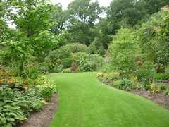
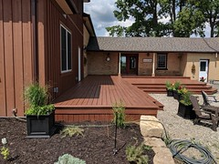

KD Landscaping
Patio - Add beauty and value to your home with a high quality patio from KD Landscaping. Our dedicated team can work quickly to install a new patio so you can have even more enjoyment this summer.
Clean & Seal - At KD Landscaping, we use high quality materials and exceptional workmanship to create beautiful patios, driveways, and paths. In order to bring the beauty and ‘wow factor’ back to your old paving, we offer a brand new specialised ‘Clean and Seal’ service.
Paving - We specialise in a wide variety of paving services that will keep your home or commercial property looking its best. Whether you’re looking for full paving installation or small paving repairs, our friendly team can help.
Fencing & Decking - We have a great selection of domestic fencing from concrete to timber as well as composite decking and fence panels.
And much more
For a Free consultation with one of our experts:
Keith: 0734 262 3338Dave: 0792 150 9448
Email Us: KD Landscaping@live.co.uk